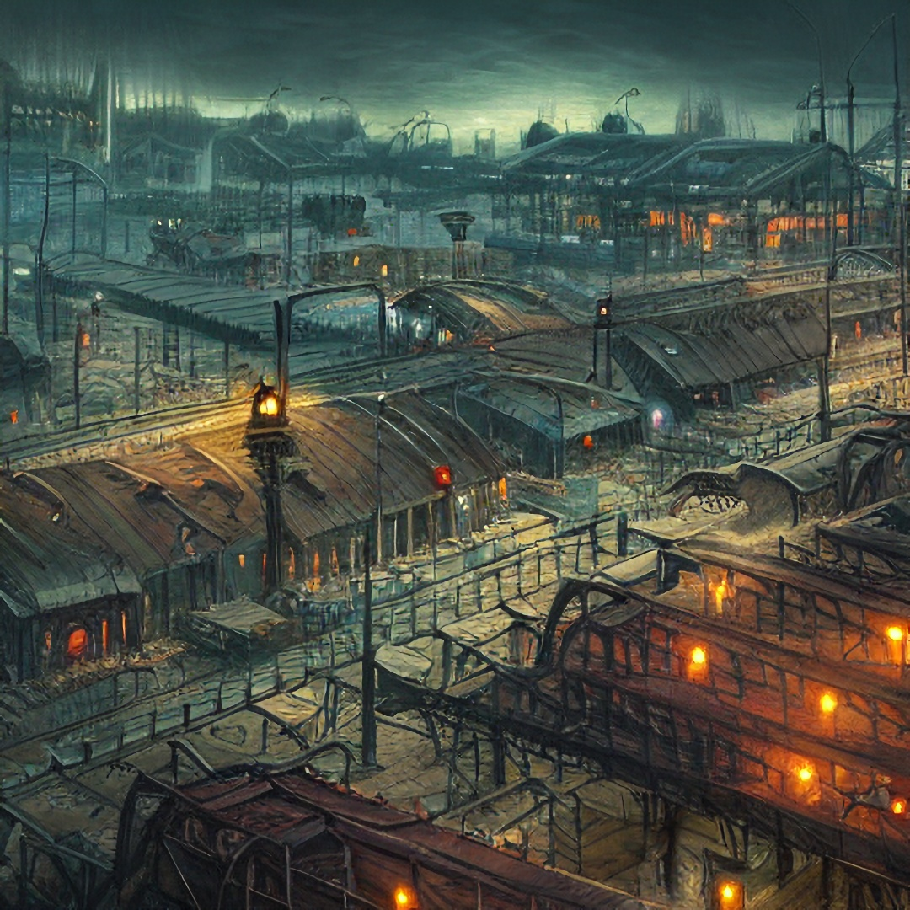
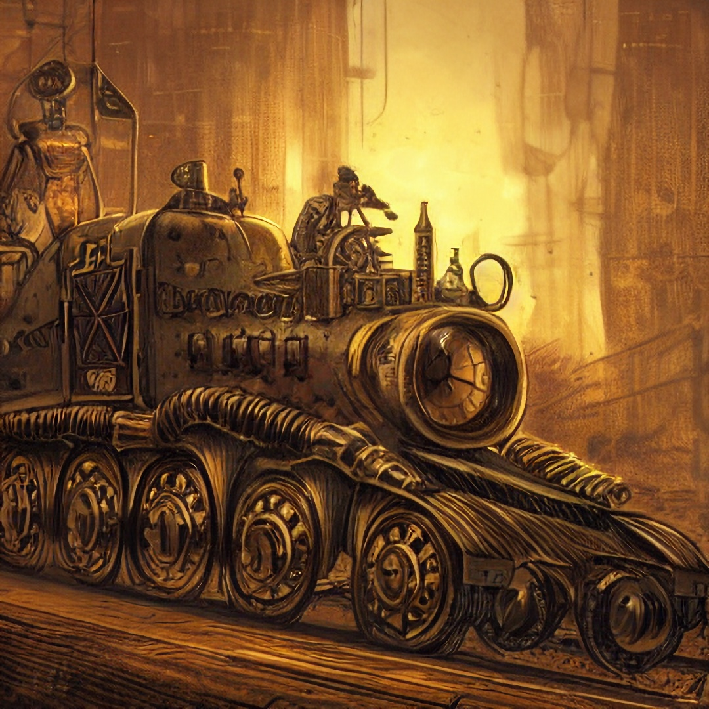
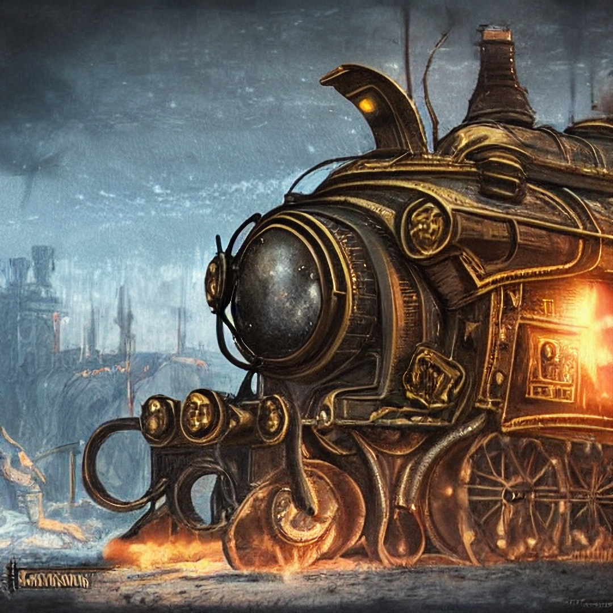
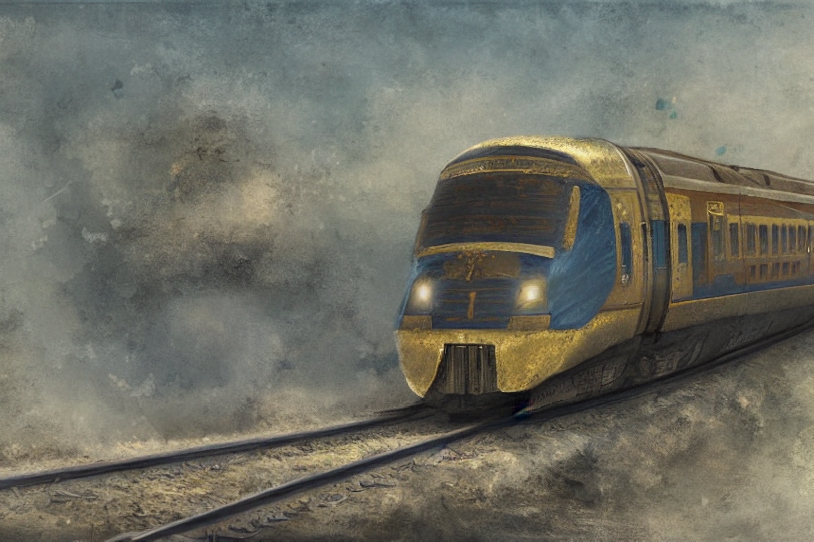
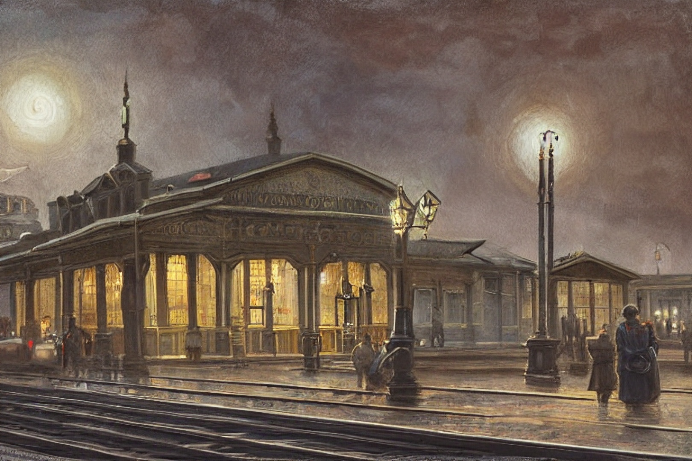
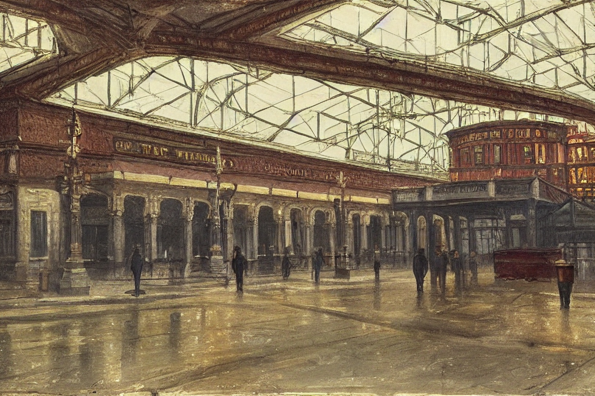

The Trans-Eyomic Railway (TER) is a network of railways linked by International Lines. The TER is managed entirely by the Daland Rail Services Corporation who constructed the network in 1845. The TER consists of 1099 lines spanning a total length of 118,448 km (73,600 mi). These lines are split into two categories, international and national, which designate whether or not a line crosses international borders or not. There are 51 international lines covering 7,588 km (4,714 mi) and 1048 national lines covering 110,860 km (68,885 mi). These lines are exclusively hex-track configurations with three rails for moving in each direction. The innermost two rails are high-speed lines primarily for diplomatic and luxury transport, the two central rails are dedicated bulk cargo rails, and the outermost lines are reserved strictly for passenger transport.
Origins
Eyom invinted the locomotive and railway by the Tauranian United Provinces in 1783 as part of their experiments in rapid land transportation. Due to their generaly good standing with Eyoms other nations at the time, and in the hopes of fostering greater international cooperation, the Provences elected to present each of Eyom's nations with their invention and make the plans available to any organization, public or private, which wished to construct a railway. After holding several demonstrations of how much cargo could be transported by rail, each of Eyom's major nations elected to construct their own railways.
These actions resulted in each national railway being constructed to the same standard, as no nation felt the need to alter or innovate on the Tauranian designs due to the Provences offering the services of experienced railway workers in training local engineers, engine drivers, and all other personnel required to construct and operate a railway. The greatest variance in all of Eyom's railways was that of the Dwarves, who elected to construct their rail lines underground by boring almost perfectly straight and level paths between their major cities. Even these Cavernlines (as they came to be called) followed the original standard for their rail size, width, tie placement, and substrate composition.
In 1814 a group of Tauric families, observing the compatible nature of each railway, elected to foot the bill to begin linking national rail systems to facilitate trade. The system was completed by 1845, and dubbed the Trans-Eyomic Railway. The wealth generated by the TER was so great it permitted the founders to transcend rule by their homeland, leading to the peaceful founding of the Dalandic Empire, which manages the Trans-Eyomic Railway to this day. By 1853 all locomotives operating within the Trans-Eyomic Railway were replaced with Dalandic designed engines, further standardizing the system. While there remain national designs for train cars, and many nations make cosmetic modifications to their engines, all Eyomic locomotives are built to Dalandic specifications.
Magitech
One should not equate an Eyomic locomotive to an Imperial locomotive. While Imperial locomotives are no strangers to arcane systems, such devices are supplementary with Imperial rail working almost entirely on technological means, and even operable without magic at reduced efficiency and speed. Eyomic locomotives cannot function without their arcane and technological systems working in total harmony.
Tracks
 The TER makes use of ballastless tracks, that is tracks which forgo the elastic combination of ties/sleepers and ballast in liu of a rigid substrate of concrete or asphalt. The TER's tracks specifically use a special concrete blend for its substrate composed of a standard concrete mix augmented with Aighgusisite and Hcealine, both of which are unique to the Lokrajaz̄o Brush but infinity replenishable due to local Kami's actions. The Aighgusisite provides the rail substrate with greater surfice tention while in liquid form as well as the ability to handle far greater compression forces once cured (Over 8.87 GPa!) while retaining an average of 97% of concretes other properties. The Hcealine provides a low-energy enchantment to the overall rail structure which can be activated by a magnetic field to create a "low-drag corridor" which reduces drag forces by an average of 32.92% without reducing the oxygen content of the corridor.
The TER makes use of ballastless tracks, that is tracks which forgo the elastic combination of ties/sleepers and ballast in liu of a rigid substrate of concrete or asphalt. The TER's tracks specifically use a special concrete blend for its substrate composed of a standard concrete mix augmented with Aighgusisite and Hcealine, both of which are unique to the Lokrajaz̄o Brush but infinity replenishable due to local Kami's actions. The Aighgusisite provides the rail substrate with greater surfice tention while in liquid form as well as the ability to handle far greater compression forces once cured (Over 8.87 GPa!) while retaining an average of 97% of concretes other properties. The Hcealine provides a low-energy enchantment to the overall rail structure which can be activated by a magnetic field to create a "low-drag corridor" which reduces drag forces by an average of 32.92% without reducing the oxygen content of the corridor.
All of the TER's rails are comprised of hot rolled T-98 Railway Steel with in what is refereed to as the "Deland Section" cross section. T-98 Railway Steel is a unique alloy of steel specialy formulated for railway use. Its formulation is classified but its properties are well known. Its primary attribute is its extreme resistance to metal fatigue, its ability to return to its original form over short periods of time if deformed, complete inability to oxidize without an oxygen concentration of 42.46% oxygen gas or higher (Even in the presence of salt water and/or chlorine vapor!), and maintains a coefficient of friction of approximately 0.38 even while wet. The Deland Section's design is optimized for high speed and high load usecases, coming at the cost of great manufacturing expense and being impossible to make use of without something in the T-90 family of railway steel.
The TER's rails are classifiable as continuous welded rails. They are manufactured in lengths up to 20 m (65 ft), and are exclusively joined making use of 12-groove dovetail joints. A dovetail joint is cut into each rail at the factory. When a rail is to be used, the dovetail is specially prepared with alchemical oil, and mated to a matching dovetail in the through percussive force. The hammering forces, oil, and tight fit of the dovetail joint create the conditions necessary for contact welding to occur. This secures the rail in place along the entire surface area of the dovetail, producing a joint which is almost as strong as if the entire piece was cast. As the joints must be perfectly straight to link, rail sections are shaped in the field through the use of the spell "Shape Track", an elaborate ritual spell requiring expert construction of arcane lines, rune marking, and an experienced caster. Once cast, the spell reforms the rail section to follow the exact line specified during casting, all without heating, damaging, or fatiguing the rail. It is exactly as if the rail had been originally made to fit the exact shape of its final route.
Locomotives
While there are many different types of Locomotives in Eyom, which are permitted on TER lines provided they follow all regulations and report their locations to to their regional traffic control station, the TER itself makes use of three standard locomotives. The three standard designs are in their 5th generation, and are produced by the Tauranian United Provences "National Railroad and Locomotive Administration" (or NRLA). TER's locomotives share many components and design elements, varying only as required for their final roles within the network's operations and cosmetically as many nations prefer trains operating within their area to be ascetically pleasing. While they appear much like Imperial Locomotives due to the exhaust stack being located roughly where an Imperial locomotive's steam pipe is, they should not be confused with one another.
All TER locomotives make use of Gas Turbine-Galvanic Engines (The locomotives are commonly called GTGEs, after these engines.). These engines are paired in a A/B configuration with the A units being nessisiary to turn over the B units, and the B units providing Galvanic current to the traction motors.
GTGE A units are composed of a duo of quad-turbo LS based 9.7-liter V12 engines which produce 1,680 horsepower at the transmission outputs, and 2,889 horsepower when linked. This is almost insufficient to start the B units.
GTGE B units make use of Deland Systems Frame 5 simple-cycle gas turbines outfitted with a sixteen-stage compressor, ten combustion chambers, and a two-stage Harriet turbine which makes 500,000 bhp. The B units require an active cooling system which makes use of a classified alchemical substance produced primarily in the Gaguheru Moorlands which prevents the engine system from melting at idle. The cooling system is not required while in motion due to airflow around the locomotive and through the engine unit. The overall engine makes 14,500 hp (10,812 kW) from a single prime mover (Prime Mover is the local term for the entire engine assembly. Some military locomotives may have 2-3 movers), with the record power output occurring in a patch of cooler denser air and standing at 18,313 hp (13,656 kW).
GTGEs are fueled by "Bunker Fuel D-88", a special blend of Heavy Fuel Oil which works in tandem with the locomotive's Exhaust Refinement System to produce a zero-emissions locomotive and ensure total combustion of all fuel used by the engine, as well as achieve a fuel efficiency of 88% and a total engine efficiency of 98.87%. (Diplomatic Insert: The TERs engineers wish to formally apologize for the missing 1.13% and promise they are working on it for the generation 6 GTGE systems.) Bunker Fuel D-88 must be heated to 120 C in order to liquifact, and is heated by the engine's A unit, which is itself powered by a refined plant oil refereed to as "diesel oil". A standard fuel tanker car carries 15,000 l (3,962 gal) of Bunker Fuel D-88 and is capable of powering a GTGE for the entirety of the Coastal Loop, a route of rail lines which l circumnavigate Eyom.
Other common components include:
- Load projector coil arrays: A series of galvanic-magnets located on the bottom of each car. These arrays project a magnetic field which excites the track substrate to create drag-reducing tunnels as the train travels. This is done for both for fuel efficiency and speed.
- Auto-adjust air-effect spoilers: A series of airfoils located on the roof of each car and engine which adjust their angle based on the current speed in order to maintain down force while traveling. Especially useful for sharp corners when at cursing speed.
- Thaumic Suspension Crystals: A series of levitation charms are used springs to ensure a perfectly smooth and stable ride. Should the charms fail, a series of standard steel leaf springs exist to catch the cars after a 2.5 cm (1 in) drop and function as the emergency suspension.
- Retrokenetic Breaks: A system of disk-breaks which use the heat-energy generated through friction to power telekinetic totems which push the train backwards, greatly assisting in deceleration. One in seven break's totems are inverted, to reduce breaking g-forces on passengers and cargo.
- Torque-Assist Caboose: A car attached at the rear of especially heavy-laden trains designed to assist in getting the train moving. It works by utilizing a pair of engines to provide thrust along the train's center of mass. The system consists of a DS90-115B high-bypass turbofan which is used to generate air-flow to power the primary engine, a "NL-71 Athodyd" which is an entirely unique form of jet propulsion unit which in which combustion takes place in supersonic airflow to hyper-accelerate the exhaust gasses to produce thrust. These are also used in Competitive Train Racing, though they are bring phased out of the competitive racing circuits in favor of a new experimental engine code named "Lovell F-1".
- Rail Bypass System: A series of retractable continuous track systems located in compartments on the bottom of each locomotive and car which can be deployed to continue operation in the event of damaged or missing rail segments. This comes at the cost of a loss of 84% fuel efficiency and a top speed of 2 kp/h (1.2 mph), as well as a serious risk of becoming stuck in the terrain if the train is over a certain weight. Their use is rare due to the resilience of the TER's rails.
- Wet Nitrous Oxide Injection System: A system which injects a liquid oxidizer to the engine's combustion chambers along with additional fuel in order to make significantly more power (and consequently speed) at the cost of much greater engine pressure and heat production. Used in the event a train has gotten behind schedule.
- Construct Defense Turrets: A series of automated pop-up turrets located on the roof of train cars and engines designed to help defend the train against bandit and monster attacks. They are typically armed with lightning rods and fireball rods in twin-linked arrays.
Passenger Trains
The TER's passenger trains make use of comfort-optimized locomotives. These locomotives are very fuel efficient, intended to provide a completely smooth ride, and lack many of the cutting edge systems used in High-Speed trains. These trains are the bread and butter of all long-distance travelers in Eyom. They are designed with comfort in mind, as many journeys will take multiple days to complete, if not a week.
To this end they come with dining cars, lounge cars, sleeping cars, reading room cars, billiards cars, theater cars, tavern cars, and of of course more standard cars such as booth cars and bench-row cars. Each passenger train will also have a few cargo cars for transporting guests luggage should they need to take more than their accommodation's worth of luggage with them.
Passenger cars are often attacked by bandits using smaller locomotives. To this end passenger trains are escorted by Rail Knights whenever possible, and are always armed in case the need for self defense arises. These defenses are also typically adiquite to clear the track of any monstrous creatures, as well as protect passengers should the train be required to stop in the wilderness for any reason.
Cargo Trains
The TER's cargo trains make use of load-optimized locomotives. These locomotives are designed to keep cargo stable during transport. This covers not only kinetic stability, but also thermodynamic stability, and consequently includes climate controlled cars. These trains generally have Security Cars which poses cannons and a small complement of soldiers or security officers. Occasionally, a Rail Knight may make use of a Cargo Train as part of their patrol, without announcing so ahead of time. This greatly reduces the risk of attacks on cargo trains.
Cargo trains are the lifeblood of Eyom's international trade system. Their importance is such that even in times of war they are generally allowed to pass through conflict zones. In these cases they are always stopped and inspected to ensure they are not supplying the enemy, but those which are not are allowed to continue on their route unmolested. Each Cargo train can transport over 80,000 tons of materials, roughly half that of a standard Imperial Trade Ship. This transport capability allows a single train to supply an entire city with one or more months of food, in addition to stocking dozens if not hundreds of stores with their imported wares. It is no wonder these trains are Eyom's standard and have not been innovated on other than to improve their speed and defensive capabilities.
High-Speed Trains
The TER's High-Speed trains make use of twin-engine systems, aerodynamic designs, inertial dampeners, rotational coutnermasses, several classified systems, lack wheels in favor of telekinetic levitation systems, and carry but a single passenger car (Extended length, with sleeping spaces for 14 taurs or 28 bipeds) for weight savings in order to achieve luxury transport in excess of 642 kph (398 mph) on a long straightaway. This speed is the peak of a TER High-Speed locomotive, with the average speed being 302 kph (188 mph). These speeds are only achievable with a skilled engineer and pilot who are typically recruited from the Train Racing circuits. Achieving average speeds necessitates special maneuvers during searing operations, combined with intimate familiarity with the GTGE system in order to maintain both engine and helm at peak efficiency. High-Speed Locomotive operator teams are required to be changed every 4 hours due to extreme fatigue from keeping the train preforming at the required speeds. They typically disembark at the first stop encountered along the route and are replaced with a fresh engineer and pilot.
High-Speed locomotives are typically restricted for government use only, and require presenting ID and papers to confirm one's affiliation with a government as well as proof they are required at a diplomatic function which cannot be reached in time via normal rail. Several banks have forged independent deals to allow Bank Officials and designated guests to book passage as well provided there is room in the train's passenger car.
Using the Trans-Eyomic Railway
The Trans-Eyomic Railway is utilized much as any other public transportation service is utilized. To book passage one simply travles to the nearest TER station, and requests Passenger or Cargo services from the desk clerk. The Clerk will apprise the customer of available options including packages, routes, and in-trip services. Once a ticket has been purchased, it is created through the use of a classified cantrip, which prevents tickets form being forged or reused while also ensuring they can only be used by the purchaser, or someone else present at the time of purchase who is specifically designated by the purchaser. This system is the same for cargo, with each unit of cargo being assigned its own arcane ticket for tracking purposes as well as security, as the tickets can be used as keys for a locking spell upon request.
As each passenger boards the train itself checks tickets through arcane means, and will eject stowaways via a dimension door totem just as the doors close. This deposits stowaways safely on the train platform, and as TER sees this as a complete solution to attempts to ride without paying, no charges are filed against attempted (or successful) stowaways. Illicit cargo is transported to the station's warehouse, and local authorities are automatically notified via a sending charm of a smuggling attempt.
Once onboard, passengers are required to make their way to their accommodations, be they a car, cabin, booth, or seat. They are to buckle into their seats for launch if necessary, but in any case are required to remain seated until the train is underway. Once in motion, the passengers are free to make use of all facilities their ticket provides access to. The ticket itself serves as legal tender for these services, as all meals and recreation is pre-paid at the time of purchase (cheaper fares can be had by forgoing meal options). Dining services are provided by both restaurant and dining car, as well as stewardesses taking food carts through bench cars.
Should the train cross international boundaries, the passengers and train is subject to the same custom checks as any other form of travel, even if that nation is not the train's final destination. For the inspection, the train will pull into a special station at the border which is equipped with arcane searching tools to sweep the train for illicit goods. Any detected contraband is automatically removed from the train through the dimension doors system, and officials are free to manually search the train if they choose or allow it to pass with only an automated inspection.
Once a passenger or cargo has reached its final stop, they are to depart the train immediately. Failure to do so will result in their ejection via dimension door as if the passenger was a stowaway. Luggage will be unloaded through the same means, but must be collected from a communal baggage claim room, unless the ticket includes "direct to hand" baggage unloading. Cargo is automatically transported to storage warehouses to be picked up by its designated recpitant.
Fare
Train Fare fluxuates in price but averages as follows:
- Bench Seat, no meal, 1 stop: 15 silver.
- Bench Seat, 1 meal, 1 stop: 20 silver.
- Booth Seat, 1 meal, 1 stop: 25 silver.
- Passenger Cabin, 1 meal, 1 stop: 40 silver.
- Public Sleeper Car, 2 meal, 1 stop: 70 silver.
- Private Car, 2 meal, 1 stop: 100 silver.
Fare increases with access to services. Service up charges average as follows:
- Entertainment Pass: 15 silver.
- Open Bar Access: 80 silver.
- Library Access: 25 silver.
- Meal Services: 5 silver each.
- Gourmet Meal Services: 50 silver.
- Tavern Access: 10 silver.
- Theater Pass: 40 silver per performance.
- Burlesque Car Access: 40 silver.
Fare also increases with each stop on the trip. Distance fees average as follows:
- 1 additional stop: 5 silver.
- 2 additional stops: 10 silver.
- 3 additional stops: 15 silver.
- 4 or more additional stop: 20 silver.